Supervised detection of spatial gradients (Kidney)
2026-04-15
Source:vignettes/kidney_guided_gradient.Rmd
kidney_guided_gradient.RmdOverview
This vignette demonstrates CoPro’s supervised/guided mode using kidney seqFISH data and its score transfer to scRNA-seq for full-transcriptome analysis. In standard (unsupervised) CoPro, the CCA identifies co-progression axes purely from the data. In supervised mode, we guide one cell type’s axis using known biological ordering—here, the nephron segment order from proximal to distal tubule—and let CoPro find the co-varying vascular program.
The full workflow covers:
- Supervised axis definition on spatial (seqFISH) data
- In-situ visualization of tubular and vascular cell scores
- Validation against known nephron segment ordering
-
Score transfer to independent scRNA-seq data using
transfer_scores() - Full-transcriptome regression to identify genes beyond the spatial panel
Note: This vignette uses a single control sample (Ctrl2). In the manuscript, results are averaged across three biological replicates for greater robustness. The single-sample results shown here may differ slightly from published figures.
Download and load data
data_path <- copro_download_data("kidney")## Downloading copro_kidney.rds from GitHub Release 'data-v1'...## Downloaded to: /home/runner/.cache/R/CoPro/copro_kidney.rds## Cells: 28555## Genes: 1298## Cell types: Vascular, Tubular## Tubular subtypes: PTS1, PTS2, PTS3, LOH-TL-C, LOH-TL-JM, TAL_1, TAL_2, TAL_3, DCT-CNT## Vascular subtypes: Vasc_1, Vasc_2, Vasc_3
# scRNA-seq full-transcriptome expression (sparse, genes x cells)
cat("\nscRNA-seq data (full transcriptome, >= 1% expressed):\n")##
## scRNA-seq data (full transcriptome, >= 1% expressed):## Vascular: 10372 genes x 10198 cells## Nephron: 12060 genes x 9117 cellsVisualize the tissue
Tubular vs Vascular cells
plot_df <- data.frame(
x = dat$locationData$x,
y = dat$locationData$y,
celltype = dat$cellTypes
)
ggplot(plot_df, aes(x = x, y = y, color = celltype)) +
geom_point(size = 0.4, alpha = 0.6) +
scale_color_manual(values = c("Tubular" = "#4e79a7",
"Vascular" = "#f28e2b")) +
coord_fixed() +
ggtitle("Kidney seqFISH (Control 2)") +
theme_classic() +
theme(legend.position = "bottom")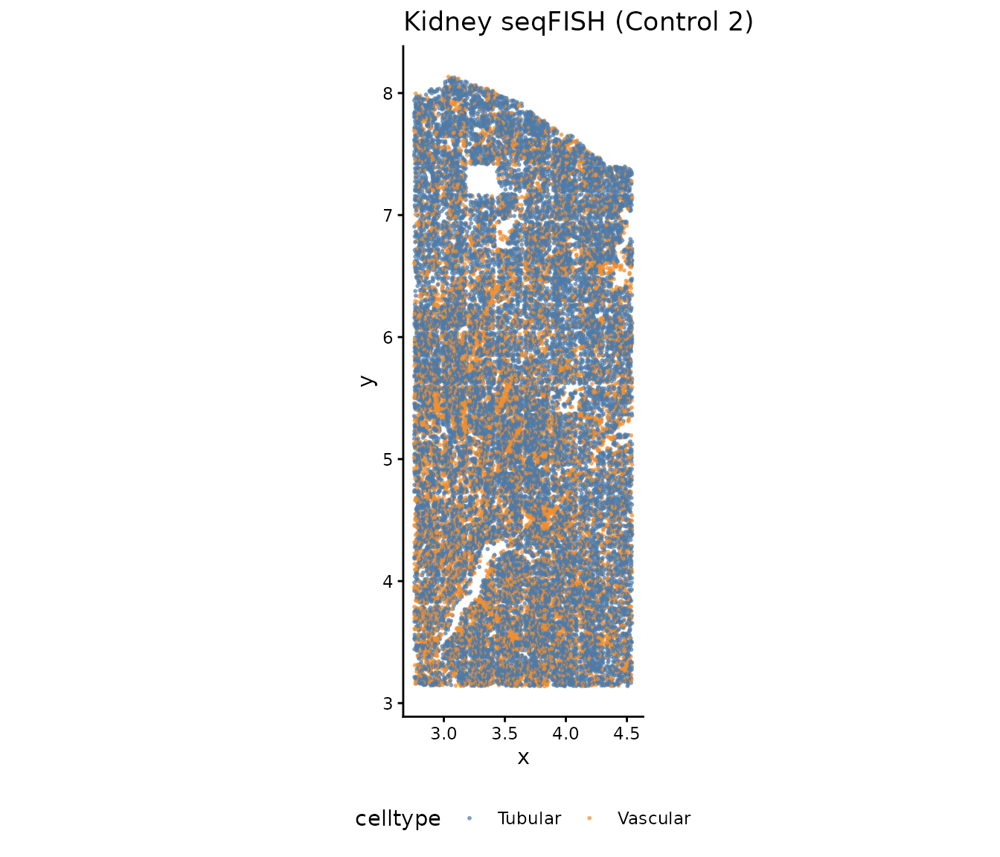
Tubular subtypes along the nephron axis
The nephron has a known anatomical ordering from proximal to distal tubule. CoPro uses this ordering as a biological prior:
subtype_df <- data.frame(
x = dat$locationData$x,
y = dat$locationData$y,
subtype = dat$metaData$celltype,
group = dat$cellTypes
)
# Tubular cells colored by segment
tub_df <- subtype_df[subtype_df$group == "Tubular", ]
segment_labels <- c("PTS1", "PTS2", "PTS3", "LOH-TL-C", "LOH-TL-JM",
"TAL_1", "TAL_2", "TAL_3", "DCT-CNT")
tub_df$subtype <- factor(tub_df$subtype, levels = segment_labels)
ggplot(tub_df, aes(x = x, y = y, color = subtype)) +
geom_point(size = 0.8) +
scale_color_brewer(palette = "Spectral") +
coord_fixed() +
ggtitle("Tubular subtypes (proximal -> distal)") +
theme_classic()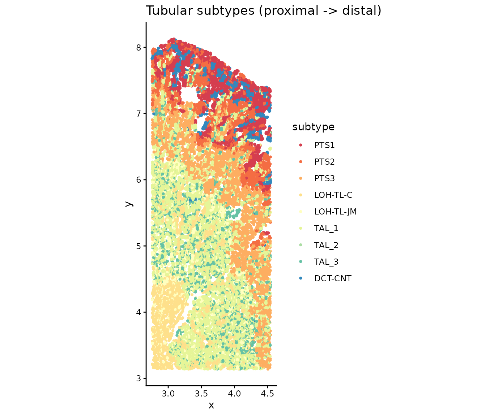
Step 1: Create CoPro object and compute PCA
obj <- newCoProSingle(
normalizedData = dat$normalizedData,
locationData = dat$locationData,
metaData = dat$metaData,
cellTypes = dat$cellTypes
)
obj <- subsetData(obj, cellTypesOfInterest = c("Tubular", "Vascular"))
# For targeted spatial panels (seqFISH, ~1300 genes),
# use fewer PCs than for scRNA-seq
obj <- computePCA(obj, nPCA = 15, center = TRUE, scale. = TRUE)## Input is dense (matrixarray), performing irlba pca...
## Input is dense (matrixarray), performing irlba pca...Step 2: Derive supervised tubular weight from nephron ordering
The key idea: we regress the known segment ordering onto the PCA scores to find the PC-space direction that best recovers the corticomedullary axis. This becomes our fixed tubular weight vector.
# Segment ordering: proximal (PTS1=1) to distal (DCT-CNT=6)
segment_order <- dat$segmentOrder
print(segment_order)## PTS1 PTS2 PTS3 LOH-TL-C LOH-TL-JM TAL_1 TAL_2 TAL_3
## 1 2 3 4 4 5 5 5
## DCT-CNT
## 6
# Get tubular PCA scores
tubular_idx <- obj@cellTypesSub == "Tubular"
tubular_pca_x <- as.matrix(obj@pcaGlobal$Tubular$x)
# Assign ordered labels to tubular cells
tubular_meta <- obj@metaDataSub[tubular_idx, ]
ordered_labels <- segment_order[tubular_meta$celltype]
# OLS regression: find PC-space direction that recovers segment ordering
x_with_intercept <- cbind(1, tubular_pca_x)
w1_raw <- lm.fit(x = x_with_intercept, y = as.numeric(ordered_labels))$coefficients
w1_raw <- w1_raw[-1] # drop intercept
w1_tubular <- w1_raw / sqrt(sum(w1_raw^2)) # unit-normalize
# Validate with Kendall tau
proj_scores <- as.vector(tubular_pca_x %*% matrix(w1_tubular, ncol = 1))
tau <- cor(proj_scores, ordered_labels, method = "kendall")
cat(sprintf("Kendall tau (tubular axis vs segment ordering): %.4f\n", tau))## Kendall tau (tubular axis vs segment ordering): 0.8337Step 3: Derive supervised vascular weight via kernel regression
We compute the spatial kernel, smooth the tubular axis scores to each vascular cell, and then regress vascular PCA scores against these smoothed scores. This finds the vascular gene program that co-varies with the nephron axis.
sigma_choice <- c(0.04, 0.08, 0.1, 0.15)
obj <- computeDistance(obj, distType = "Euclidean2D")## normalizeDistance is set to TRUE, so distance will be normalized, so that 0.01 percentile distance will be scaled to 0.01
## 0% 25% 50% 75% 100%
## 0.01661044 0.97355863 1.59208771 2.45716417 5.20528057
## The scaling factor for normalizing distance is 0.6020311
obj <- computeKernelMatrix(obj, sigmaValues = sigma_choice)## Computing pairwise kernel matrix for 2 cell types
## current sigma value is 0.04
## current sigma value is 0.08
## current sigma value is 0.1
## current sigma value is 0.15
# Get vascular PCA scores
vasc_idx <- obj@cellTypesSub == "Vascular"
vasc_pca_x <- as.matrix(obj@pcaGlobal$Vascular$x)
# Cross-type kernel: vascular -> tubular
vasc_loc <- as.matrix(obj@locationDataSub[vasc_idx, c("x", "y")])
tub_loc <- as.matrix(obj@locationDataSub[tubular_idx, c("x", "y")])
dist_vt <- fields::rdist(vasc_loc, tub_loc)
# Gaussian kernel: K(d) = exp(-d^2 / sigma^2)
kij_vt <- exp(-dist_vt^2 / 0.1^2)
kij_vt[kij_vt < 5e-7] <- 0
up_qt <- quantile(kij_vt[kij_vt > 5e-7], 0.85)
kij_vt[kij_vt > up_qt] <- up_qt
# Kernel-smoothed tubular signal at each vascular cell
tubular_axis_scores <- tubular_pca_x %*% matrix(w1_tubular, ncol = 1)
y_vasc <- kij_vt %*% tubular_axis_scores
y_vasc <- scale(y_vasc, center = TRUE, scale = FALSE)
# Regress vascular PCA scores against smoothed tubular signal
w1_vasc_raw <- lm.fit(x = cbind(1, vasc_pca_x), y = as.vector(y_vasc))$coefficients
w1_vasc_raw <- w1_vasc_raw[-1]
w1_vasc <- w1_vasc_raw / sqrt(sum(w1_vasc_raw^2)) # unit-normalizeStep 4: Run supervised CCA
obj <- runSkrCCA(obj, scalePCs = TRUE, maxIter = 500, nCC = 4,
transferred_weight_1 = list(
Tubular = matrix(w1_tubular, ncol = 1),
Vascular = matrix(w1_vasc, ncol = 1)
))## Running skrCCA for sigma = 0.04## [1] "Convergence reached at 1 iterations (Max diff = 1.388e-16 )"
## [1] "Convergence reached at 1 iterations (Max diff = 1.110e-16 )"
## [1] "Convergence reached at 0 iterations (Max diff = 4.573e-15 )"## Running skrCCA for sigma = 0.08## [1] "Convergence reached at 0 iterations (Max diff = 7.772e-16 )"
## [1] "Convergence reached at 1 iterations (Max diff = 2.220e-16 )"
## [1] "Convergence reached at 1 iterations (Max diff = 9.853e-16 )"## Running skrCCA for sigma = 0.1## [1] "Convergence reached at 0 iterations (Max diff = 2.665e-15 )"
## [1] "Convergence reached at 1 iterations (Max diff = 2.220e-16 )"
## [1] "Convergence reached at 0 iterations (Max diff = 1.055e-15 )"## Running skrCCA for sigma = 0.15## [1] "Convergence reached at 0 iterations (Max diff = 2.220e-16 )"
## [1] "Convergence reached at 1 iterations (Max diff = 1.110e-16 )"
## [1] "Convergence reached at 1 iterations (Max diff = 1.110e-16 )"## Optimization succeeded for 4 sigma value(s): sigma_0.04, sigma_0.08, sigma_0.1, sigma_0.15
obj <- computeNormalizedCorrelation(obj)## Calculating spectral norms, depending on the data size, this may take a while.
## Finished calculating spectral norms
obj <- computeGeneAndCellScores(obj)
obj <- computeRegressionGeneScores(obj)## Computed regression gene scores for sigma=0.04, cellType='Tubular'## Computed regression gene scores for sigma=0.04, cellType='Vascular'## Computed regression gene scores for sigma=0.08, cellType='Tubular'## Computed regression gene scores for sigma=0.08, cellType='Vascular'## Computed regression gene scores for sigma=0.1, cellType='Tubular'## Computed regression gene scores for sigma=0.1, cellType='Vascular'## Computed regression gene scores for sigma=0.15, cellType='Tubular'## Computed regression gene scores for sigma=0.15, cellType='Vascular'Results: Spatial analysis
Normalized correlation across sigma values
ncorr <- getNormCorr(obj)
ggplot(ncorr, aes(x = sigmaValues, y = normalizedCorrelation, group = 1)) +
geom_point() +
geom_line() +
facet_wrap(~ ct12 + CC_index) +
xlab("Sigma") +
ylab("Normalized Correlation") +
ggtitle("Normalized correlation -- supervised nephron axis") +
theme_minimal()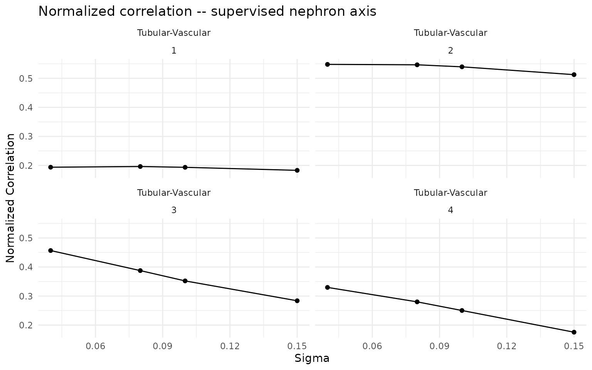
Tubular cell scores in situ
The tubular cell scores should recapitulate the corticomedullary axis:
sigma_opt <- 0.1
cs <- getCellScoresInSitu(obj, sigmaValueChoice = sigma_opt)
cs_tub <- cs[cs$cellTypesSub == "Tubular", ]
# Quantile-clamp color scale for better contrast (3%/97%)
tub_lims <- quantile(cs_tub$cellScores, c(0.03, 0.97))
ggplot(cs_tub) +
geom_point(aes(x = x, y = y, color = cellScores), size = 0.5, stroke = 0) +
scale_color_viridis_c(option = "D", name = "Score",
limits = tub_lims, oob = scales::squish) +
coord_fixed() +
ggtitle("Tubular cell scores -- corticomedullary axis") +
theme_classic() +
theme(axis.line = element_blank(), axis.text = element_blank(),
axis.ticks = element_blank(), axis.title = element_blank())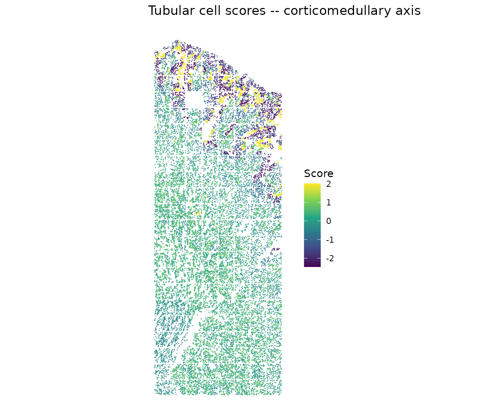
Vascular cell scores in situ
The vascular program that co-varies with the nephron axis:
cs_vasc <- cs[cs$cellTypesSub == "Vascular", ]
vasc_lims <- quantile(cs_vasc$cellScores, c(0.03, 0.97))
ggplot(cs_vasc) +
geom_point(aes(x = x, y = y, color = cellScores), size = 0.8, stroke = 0) +
scale_color_viridis_c(option = "C", name = "Score",
limits = vasc_lims, oob = scales::squish) +
coord_fixed() +
ggtitle("Vascular cell scores -- cortical vs medullary separation") +
theme_classic() +
theme(axis.line = element_blank(), axis.text = element_blank(),
axis.ticks = element_blank(), axis.title = element_blank())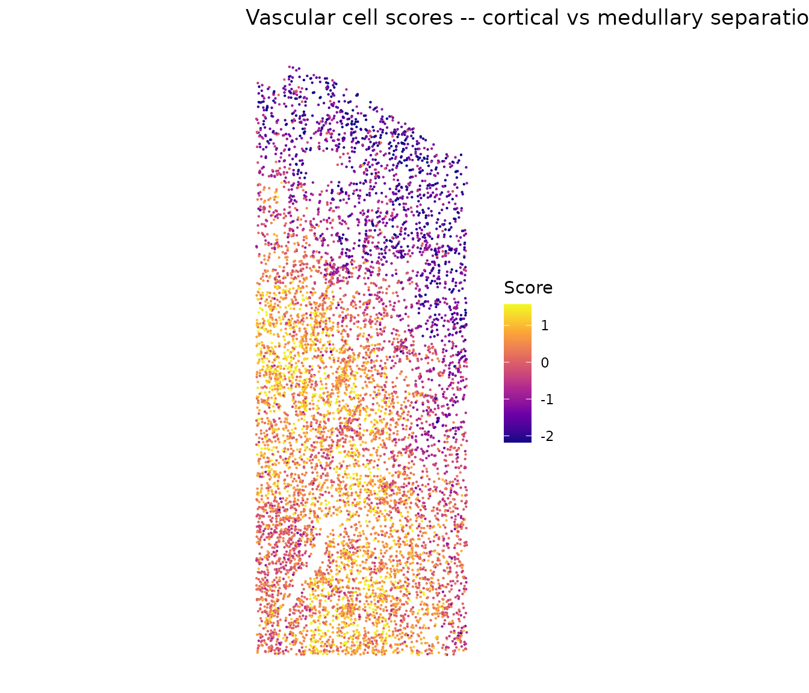
CoPro score vs known nephron segment ordering
A key validation: CoPro cell scores should monotonically increase (or decrease) along the known nephron segments, indicating successful recovery of the corticomedullary axis.
# Add cell scores to metadata
tub_meta <- obj@metaDataSub[tubular_idx, ]
tub_meta$copro_score <- cs_tub$cellScores
seg_levels <- c("PTS1", "PTS2", "PTS3", "LOH-TL-C", "LOH-TL-JM",
"TAL_1", "TAL_2", "TAL_3", "DCT-CNT")
tub_meta$segment <- factor(tub_meta$celltype, levels = seg_levels)
tau_all <- cor(tub_meta$copro_score,
as.numeric(segment_order[as.character(tub_meta$celltype)]),
method = "kendall")
ggplot(tub_meta[!is.na(tub_meta$segment), ]) +
geom_boxplot(aes(x = segment, y = copro_score, fill = segment),
outlier.size = 0.3) +
scale_fill_brewer(palette = "Spectral", guide = "none") +
labs(x = "Nephron segment", y = "CoPro score (CC1)",
title = "CoPro score vs known nephron ordering",
subtitle = sprintf("Kendall tau = %.3f", tau_all)) +
theme_classic() +
theme(axis.text.x = element_text(angle = 45, hjust = 1))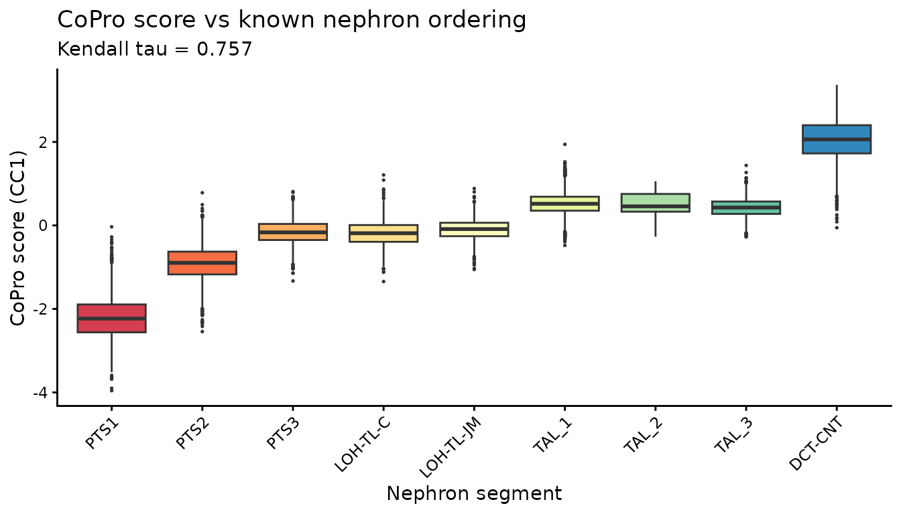
Vascular subtype separation
The vascular subtypes (Vasc_1, Vasc_2, Vasc_3) should show differential scores reflecting cortical vs medullary localization:
vasc_meta <- obj@metaDataSub[vasc_idx, ]
vasc_meta$copro_score <- cs_vasc$cellScores
vasc_meta$vasc_subtype <- vasc_meta$celltype
ggplot(vasc_meta) +
geom_boxplot(aes(x = vasc_subtype, y = copro_score,
fill = vasc_subtype)) +
scale_fill_brewer(palette = "Set2", guide = "none") +
labs(x = "Vascular subtype", y = "CoPro score (CC1)",
title = "Vascular subtypes along the corticomedullary axis") +
theme_classic()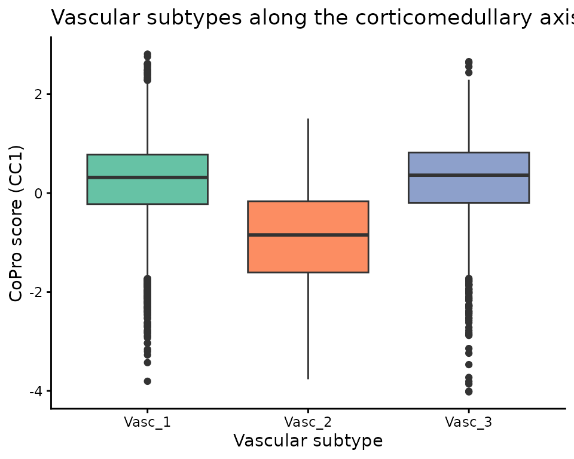
Tubular-vascular cross-type correlation
df_corr <- getCorrTwoTypes(obj,
sigmaValueChoice = sigma_opt,
cellTypeA = "Tubular",
cellTypeB = "Vascular",
ccIndex = 1
)
ggplot(df_corr) +
geom_point(aes(x = AK, y = B), size = 0.5, alpha = 0.5) +
xlab("Tubular CC1 (spatially smoothed)") +
ylab("Vascular CC1") +
ggtitle("Tubular-Vascular co-progression along nephron axis") +
theme_minimal()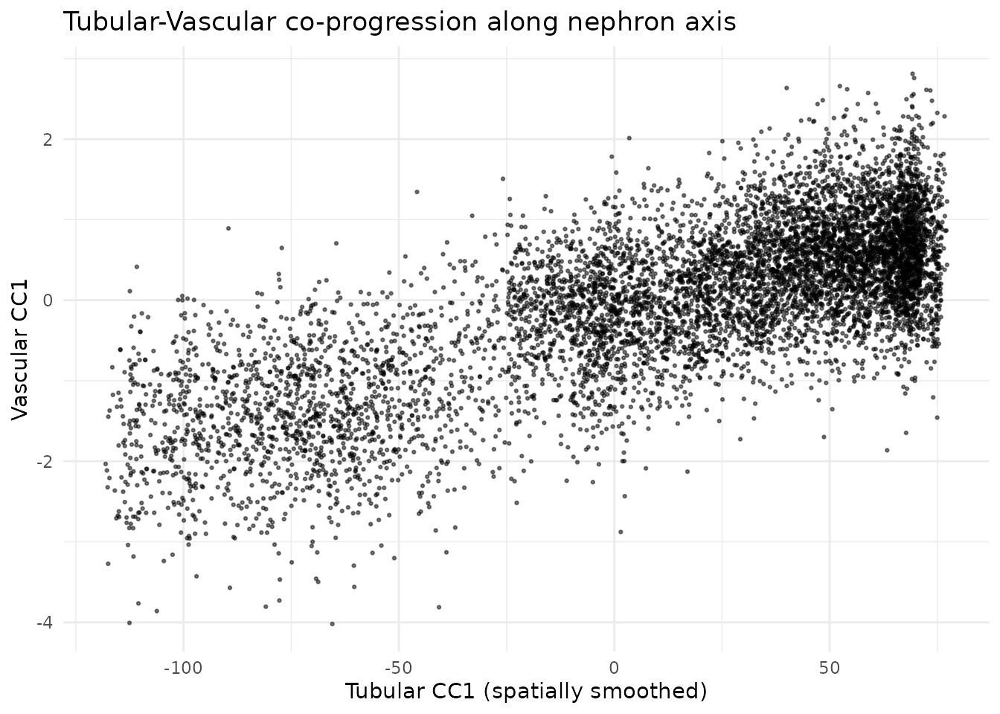
Top gene weights (spatial panel)
key <- paste0("geneScores|sigma", sigma_opt, "|Vascular")
gs_vasc <- obj@geneScoresRegression[[key]]
gs_cc1 <- gs_vasc[, 1]
top_genes <- head(sort(abs(gs_cc1), decreasing = TRUE), 20)
top_df <- data.frame(
gene = factor(names(top_genes), levels = rev(names(top_genes))),
weight = gs_cc1[names(top_genes)]
)
top_df$direction <- ifelse(top_df$weight > 0, "cortical", "medullary")
ggplot(top_df, aes(x = gene, y = weight, fill = direction)) +
geom_col() +
coord_flip() +
scale_fill_manual(values = c("cortical" = "#e41a1c",
"medullary" = "#377eb8")) +
ggtitle("Top 20 Vascular genes (CC1, regression)") +
theme_classic() +
theme(legend.position = "bottom")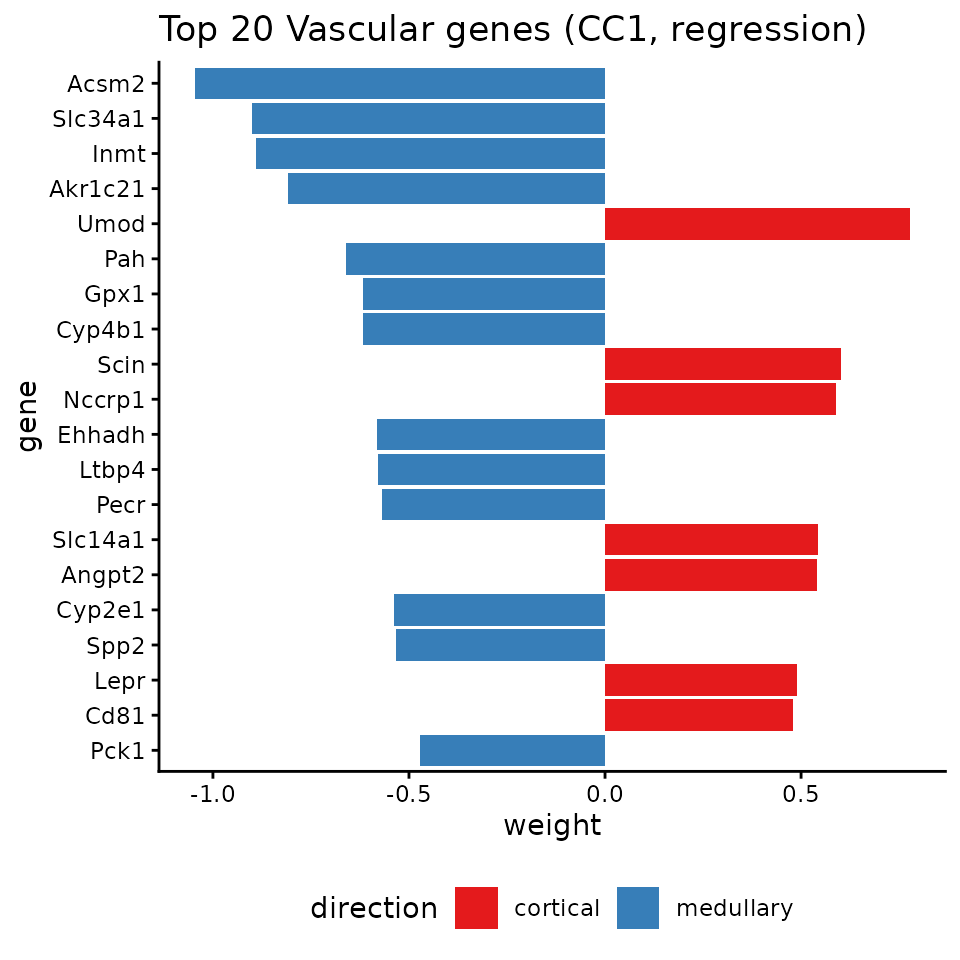
key_tub <- paste0("geneScores|sigma", sigma_opt, "|Tubular")
gs_tub <- obj@geneScoresRegression[[key_tub]]
gs_tub_cc1 <- gs_tub[, 1]
top_tub <- head(sort(abs(gs_tub_cc1), decreasing = TRUE), 20)
top_tub_df <- data.frame(
gene = factor(names(top_tub), levels = rev(names(top_tub))),
weight = gs_tub_cc1[names(top_tub)]
)
top_tub_df$direction <- ifelse(top_tub_df$weight > 0, "distal", "proximal")
ggplot(top_tub_df, aes(x = gene, y = weight, fill = direction)) +
geom_col() +
coord_flip() +
scale_fill_manual(values = c("distal" = "#e41a1c",
"proximal" = "#377eb8")) +
ggtitle("Top 20 Tubular genes (CC1, regression)") +
theme_classic() +
theme(legend.position = "bottom")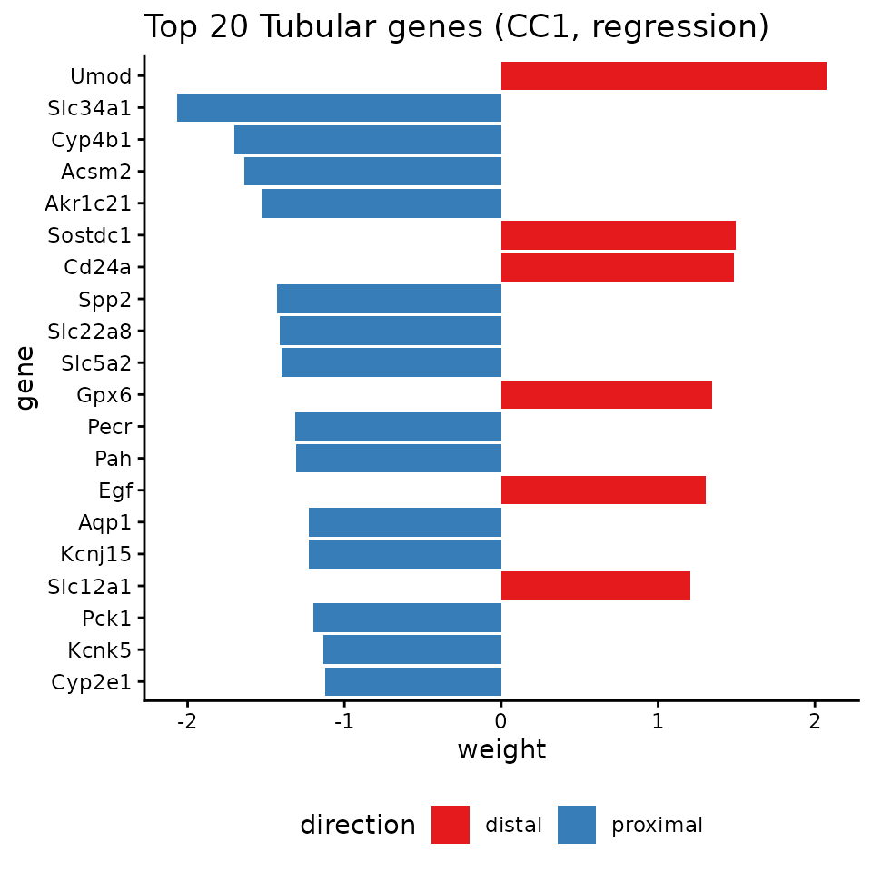
Score transfer to scRNA-seq
CoPro gene weights learned from the spatial (seqFISH) panel can be
transferred to scRNA-seq data. The
transfer_scores() function:
- Quantile-normalizes each gene in the scRNA-seq data to match the seqFISH distribution
- Standardizes using the seqFISH mean and SD
- Multiplies by the gene weight vector to produce a per-cell score
This lets us visualize the corticomedullary axis on independent cell populations and identify axis-associated genes across the full transcriptome.
Step 1: Extract gene weights and spatial expression
# Get regression gene weights for vascular cells (CC1)
gs_vasc_cc1 <- gs_vasc[, 1, drop = FALSE] # genes x 1 matrix
# Get the seqFISH expression matrix for vascular cells (reference)
seqfish_vasc_expr <- obj@normalizedDataSub[vasc_idx, ]
# scRNA-seq expression: sparse genes x cells -> dense cells x genes
sc_vasc_full <- t(as.matrix(dat$scRNA_vasc_expr))
# Align genes: use intersection of seqFISH, scRNA-seq, and gene weights
shared_genes <- intersect(colnames(seqfish_vasc_expr), colnames(sc_vasc_full))
shared_genes <- intersect(shared_genes, rownames(gs_vasc_cc1))
cat("Shared genes for transfer:", length(shared_genes), "\n")## Shared genes for transfer: 632
seqfish_vasc_shared <- as.matrix(seqfish_vasc_expr[, shared_genes])
sc_vasc_shared <- sc_vasc_full[, shared_genes]
gs_shared <- gs_vasc_cc1[shared_genes, , drop = FALSE]Step 2: Transfer scores
# transfer_scores: quantile normalize scRNA-seq to seqFISH,
# standardize, then multiply by gene weights
vasc_transferred <- transfer_scores(
mat_A = seqfish_vasc_shared, # reference (seqFISH)
mat_B = sc_vasc_shared, # target (scRNA-seq)
gs_ct = gs_shared, # gene weights
use_quantile_normalization = TRUE,
gs_weight_threshold = 0,
verbose = FALSE
)
cat("Transferred vascular scores:", length(vasc_transferred), "cells\n")## Transferred vascular scores: 10198 cells## Score range: -33.78 13.99Step 3: Transfer nephron scores
# Same procedure for nephron/tubular cells
gs_tub_cc1 <- gs_tub[, 1, drop = FALSE]
seqfish_tub_expr <- obj@normalizedDataSub[tubular_idx, ]
sc_neph_full <- t(as.matrix(dat$scRNA_neph_expr))
shared_genes_n <- intersect(colnames(seqfish_tub_expr), colnames(sc_neph_full))
shared_genes_n <- intersect(shared_genes_n, rownames(gs_tub_cc1))
neph_transferred <- transfer_scores(
mat_A = as.matrix(seqfish_tub_expr[, shared_genes_n]),
mat_B = sc_neph_full[, shared_genes_n],
gs_ct = gs_tub_cc1[shared_genes_n, , drop = FALSE],
use_quantile_normalization = TRUE,
gs_weight_threshold = 0,
verbose = FALSE
)
cat("Transferred nephron scores:", length(neph_transferred), "cells\n")## Transferred nephron scores: 9117 cellsResults: scRNA-seq transfer
Nephron UMAP colored by transferred CoPro score
neph_umap <- dat$scRNA_neph_umap
neph_umap$axis_score <- neph_transferred[rownames(neph_umap), 1]
neph_umap_filt <- neph_umap[!is.na(neph_umap$agg_label), ]
ggplot(neph_umap_filt[!is.na(neph_umap_filt$axis_score), ],
aes(x = UMAP1, y = UMAP2, color = axis_score)) +
geom_point(size = 0.3, alpha = 0.5) +
scale_color_viridis_c(option = "D") +
theme_classic(base_size = 10) +
theme(axis.line = element_blank(), axis.ticks = element_blank(),
axis.title = element_blank(), axis.text = element_blank()) +
labs(title = "Transferred CoPro score (nephron)", color = "Score")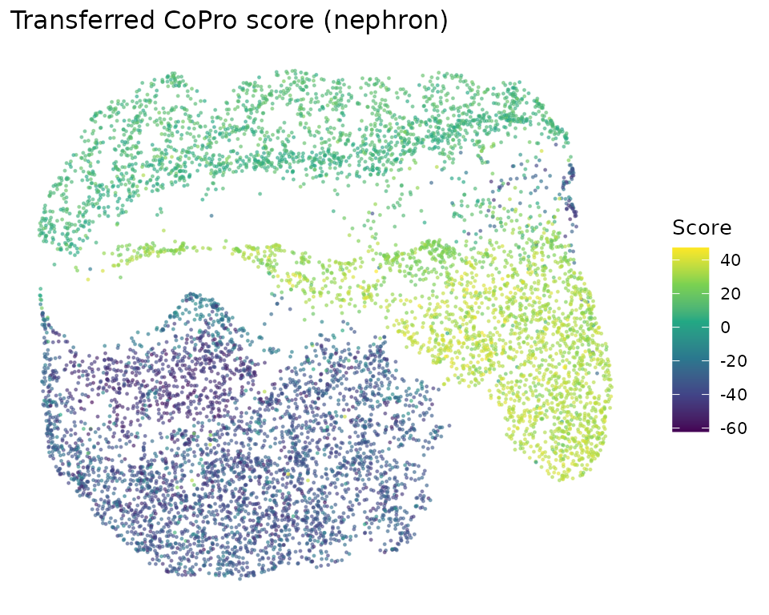
Nephron UMAP colored by cell type
seg_levels_agg <- c("PTS1", "PTS2", "PTS3", "LOH-TL-C", "LOH-TL-JM",
"TAL", "DCT-CNT")
neph_umap_filt$agg_label <- factor(neph_umap_filt$agg_label,
levels = seg_levels_agg)
seg_colors <- c(
"PTS1" = "#08519c", "PTS2" = "#3182bd", "PTS3" = "#6baed6",
"LOH-TL-C" = "#006d2c", "LOH-TL-JM" = "#31a354",
"TAL" = "#e6550d", "DCT-CNT" = "#7a0177"
)
ggplot(neph_umap_filt[!is.na(neph_umap_filt$agg_label), ],
aes(x = UMAP1, y = UMAP2, color = agg_label)) +
geom_point(size = 0.3, alpha = 0.5) +
scale_color_manual(values = seg_colors) +
theme_classic(base_size = 10) +
theme(axis.line = element_blank(), axis.ticks = element_blank(),
axis.title = element_blank(), axis.text = element_blank()) +
labs(title = "Nephron cell type annotation", color = "Segment") +
guides(color = guide_legend(override.aes = list(size = 2)))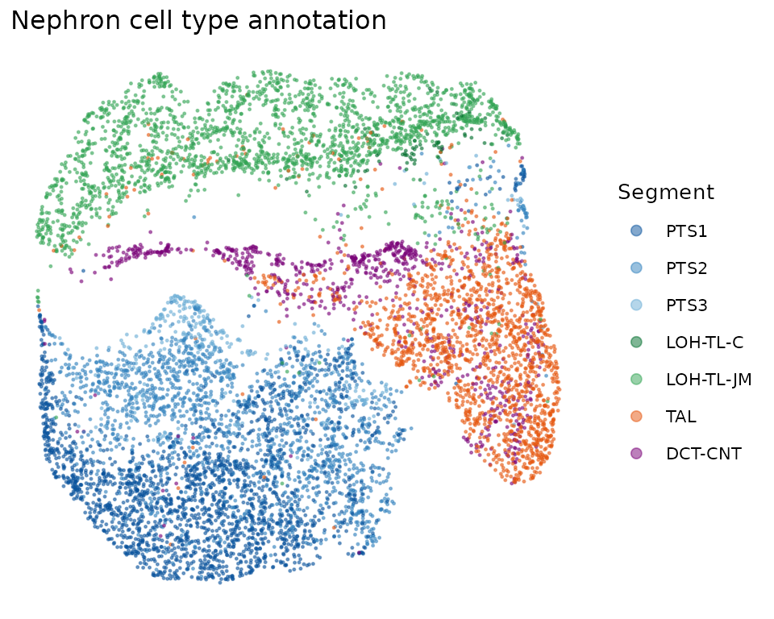
Nephron boxplot by segment
Transferred CoPro scores recapitulate the nephron segment ordering in the independent scRNA-seq dataset:
ont_to_spatial <- dat$scRNA_ont_to_spatial
neph_box <- data.frame(
axis_score = neph_transferred[, 1],
ont_id = neph_umap[rownames(neph_transferred), "ont_id"],
stringsAsFactors = FALSE
)
neph_box$agg_label <- ont_to_spatial[as.character(neph_box$ont_id)]
neph_box <- neph_box[!is.na(neph_box$agg_label), ]
neph_box$agg_label <- factor(neph_box$agg_label, levels = seg_levels_agg)
ggplot(neph_box, aes(x = agg_label, y = axis_score, fill = agg_label)) +
geom_boxplot(outlier.size = 0.3, lwd = 0.3) +
scale_fill_manual(values = seg_colors, guide = "none") +
labs(x = "Cell type", y = "CoPro axis score",
title = "Transferred score by nephron segment (scRNA-seq)") +
theme_classic() +
theme(axis.text.x = element_text(angle = 45, hjust = 1, size = 9))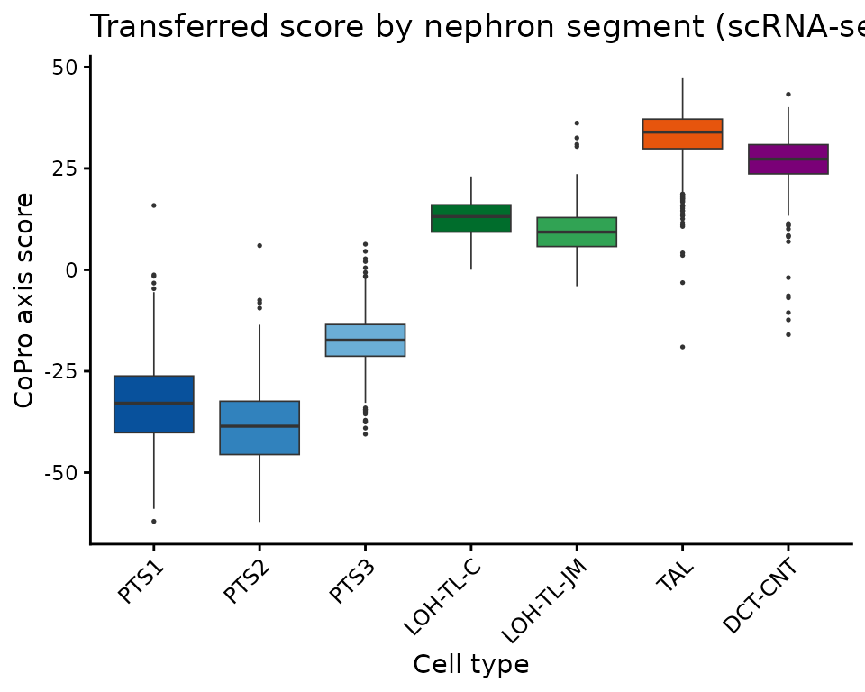
Vascular UMAP colored by transferred CoPro score
vasc_umap <- dat$scRNA_vasc_umap
vasc_umap$axis_score <- vasc_transferred[rownames(vasc_umap), 1]
q05 <- quantile(vasc_umap$axis_score, 0.05, na.rm = TRUE)
q95 <- quantile(vasc_umap$axis_score, 0.95, na.rm = TRUE)
ggplot(vasc_umap[!is.na(vasc_umap$axis_score), ],
aes(x = UMAP1, y = UMAP2, color = axis_score)) +
geom_point(size = 0.3, alpha = 0.5) +
scale_color_viridis_c(option = "C",
limits = c(q05, q95), oob = scales::squish) +
theme_classic(base_size = 10) +
theme(axis.line = element_blank(), axis.ticks = element_blank(),
axis.title = element_blank(), axis.text = element_blank()) +
labs(title = "Transferred CoPro score (vasculature)", color = "Score")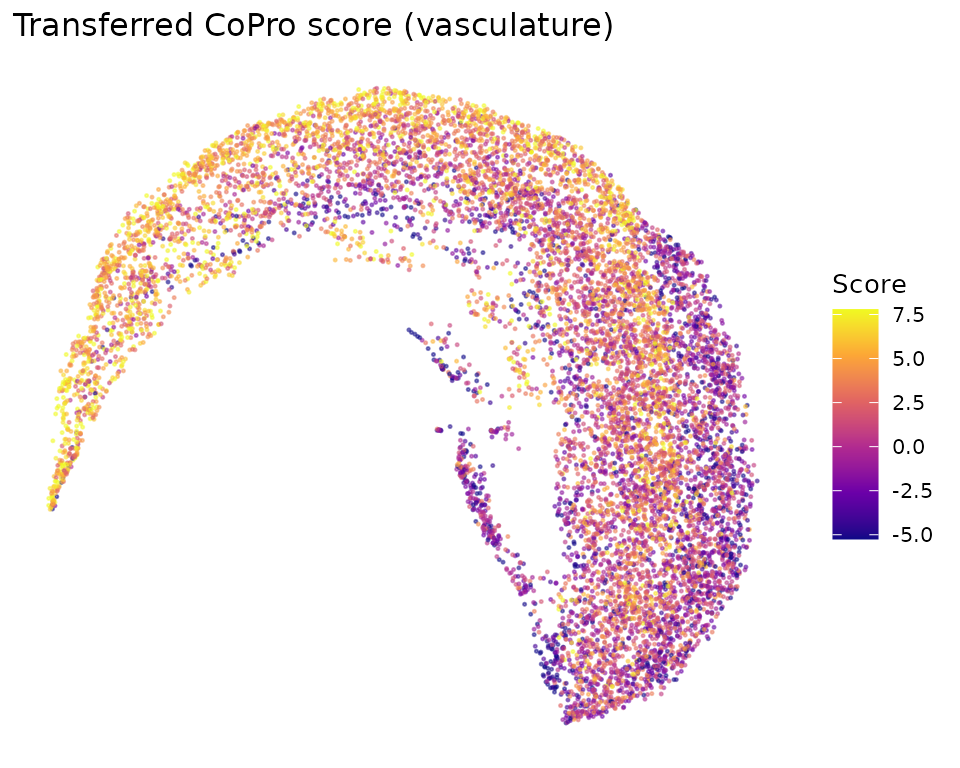
Vascular UMAP colored by cluster
ggplot(vasc_umap, aes(x = UMAP1, y = UMAP2, color = cluster)) +
geom_point(size = 0.3, alpha = 0.5) +
theme_classic(base_size = 10) +
theme(axis.line = element_blank(), axis.ticks = element_blank(),
axis.title = element_blank(), axis.text = element_blank()) +
labs(title = "Vascular cluster annotation", color = "Cluster") +
guides(color = guide_legend(override.aes = list(size = 2)))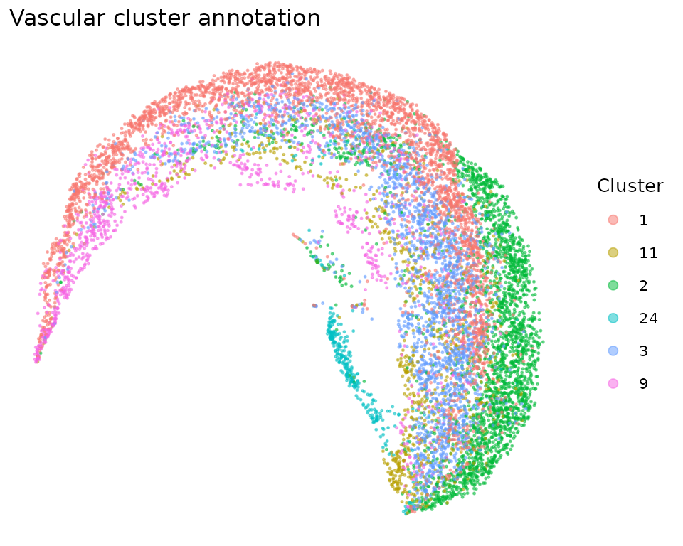
Vascular boxplot by cluster
Transferred scores separate vascular clusters along the corticomedullary axis:
vasc_box <- data.frame(
axis_score = vasc_transferred[, 1],
cluster = vasc_umap[rownames(vasc_transferred), "cluster"],
stringsAsFactors = FALSE
)
# Order clusters by median score
cluster_medians <- tapply(vasc_box$axis_score, vasc_box$cluster, median)
vasc_box$cluster <- factor(vasc_box$cluster,
levels = names(sort(cluster_medians)))
ggplot(vasc_box, aes(x = cluster, y = axis_score, fill = cluster)) +
geom_boxplot(outlier.size = 0.3, lwd = 0.4) +
labs(x = "Cluster", y = "CoPro axis score",
title = "Transferred score by vascular cluster (scRNA-seq)") +
theme_classic() + theme(legend.position = "none")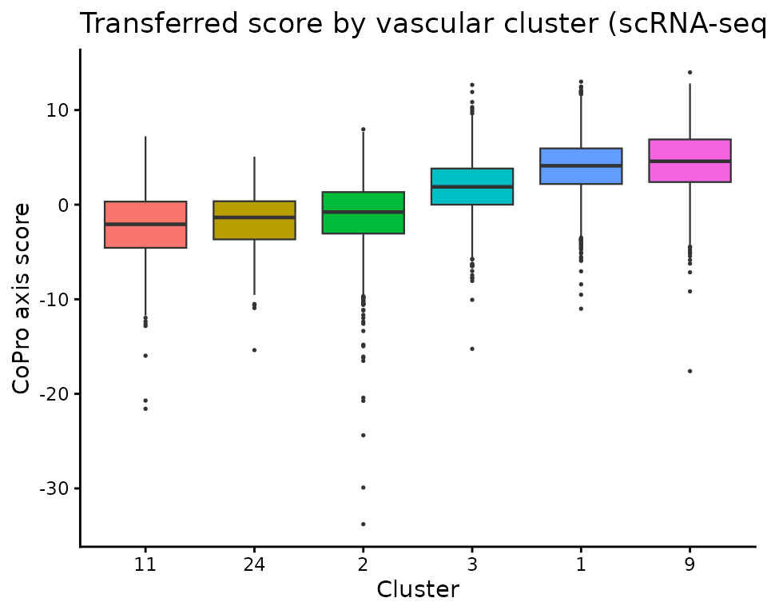
Full-transcriptome regression
After transferring CoPro scores using the shared spatial panel genes, each scRNA-seq cell has an axis score. We then regress every gene in the full scRNA-seq transcriptome against this score. This is the key advantage of score transfer: the spatial panel provides the axis, but the full transcriptome reveals axis-associated genes beyond the panel.
# Use transferred vascular scores
vasc_scores_vec <- vasc_transferred[, 1]
# Remove outlier cells (1st/99th percentile)
q01 <- quantile(vasc_scores_vec, 0.01)
q99 <- quantile(vasc_scores_vec, 0.99)
keep <- vasc_scores_vec >= q01 & vasc_scores_vec <= q99
vasc_scores_filt <- vasc_scores_vec[keep]
# Full-transcriptome expression for regression (all genes, not just shared)
sc_vasc_filt <- sc_vasc_full[names(vasc_scores_filt), ]
# Filter genes: non-zero SD
gene_sd <- apply(sc_vasc_filt, 2, sd)
sc_vasc_filt <- sc_vasc_filt[, gene_sd >= 1e-5, drop = FALSE]
# Regress each gene against the axis score (centered)
ax_c <- vasc_scores_filt - mean(vasc_scores_filt)
reg_results <- data.frame(
gene = colnames(sc_vasc_filt),
beta = NA_real_, r = NA_real_, p_value = NA_real_,
mean_expr = colMeans(sc_vasc_filt),
stringsAsFactors = FALSE
)
for (i in seq_len(ncol(sc_vasc_filt))) {
y <- sc_vasc_filt[, i] - mean(sc_vasc_filt[, i])
ct <- cor.test(ax_c, y)
reg_results$beta[i] <- coef(lm(y ~ ax_c))[2]
reg_results$r[i] <- ct$estimate
reg_results$p_value[i] <- ct$p.value
}
reg_results$fdr <- p.adjust(reg_results$p_value, method = "BH")
cat("Significant genes (FDR < 0.05):",
sum(reg_results$fdr < 0.05, na.rm = TRUE), "\n")## Significant genes (FDR < 0.05): 3243
# MA plot: beta on x-axis, log expression on y-axis
reg_results$log_mean_expr <- log(reg_results$mean_expr + 1)
# Known vascular zone markers from Barry et al. 2019
known_cortical <- c("Gata5", "Tbx3", "Prdm1", "Pbx1", "Klf4",
"Ehd3", "Lpl", "Sema5a",
"Slc6a6", "Slc16a2",
"Efnb2", "Hey1", "Dll4", "Notch4", "Sox17", "Pdgfb")
known_medullary <- c("Nr2f2", "Plvap", "Cryab", "Ephb4",
"Slc14a1", "Aqp1", "Slco4a1", "Igfbp7")
known_markers <- c(known_cortical, known_medullary)
reg_results$is_known <- reg_results$gene %in% known_markers
reg_results$direction <- ifelse(
reg_results$fdr < 0.05 & (reg_results$is_known |
abs(reg_results$beta) >= 0.02),
ifelse(reg_results$beta > 0, "Medullary", "Cortical"),
"NS"
)
# Label known markers + large-beta genes
reg_results$label <- ifelse(
reg_results$is_known | (reg_results$direction != "NS" &
abs(reg_results$beta) >= 0.05),
reg_results$gene, ""
)
# Three-layer plot matching manuscript style
df_ns <- reg_results[reg_results$direction == "NS", ]
df_conc <- reg_results[reg_results$direction != "NS" & !reg_results$is_known, ]
df_known <- reg_results[reg_results$is_known, ]
ggplot(reg_results, aes(x = beta, y = log_mean_expr)) +
geom_point(data = df_ns, color = "grey80", size = 0.3, alpha = 0.3) +
geom_point(data = df_conc, aes(color = direction), size = 0.5, alpha = 0.4) +
geom_point(data = df_known, aes(color = direction), size = 2.5,
shape = 17, alpha = 0.9) +
geom_text_repel(
data = reg_results[reg_results$label != "", ],
aes(label = label, color = direction),
size = 2.5, max.overlaps = 30, segment.size = 0.2,
fontface = "italic", show.legend = FALSE,
min.segment.length = 0.2, box.padding = 0.35
) +
scale_color_manual(
values = c("NS" = "grey80", "Medullary" = "#2166ac", "Cortical" = "#b2182b"),
breaks = c("Cortical", "Medullary"),
labels = c("Cortical (GC)", "Medullary (vasa recta)"),
name = NULL
) +
labs(x = expression(beta ~ (regression ~ coefficient)),
y = expression(ln(mean ~ expression + 1)),
title = "Vascular full-transcriptome regression") +
theme_classic(base_size = 11) +
theme(legend.position = "bottom")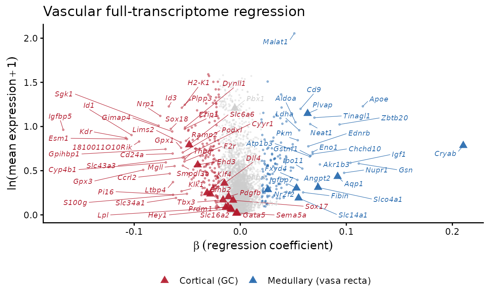
Key takeaways
- Supervised mode lets you leverage known biology (nephron segment ordering) to guide one axis while CoPro discovers the co-varying program in the other cell type.
-
Regression gene scores
(
computeRegressionGeneScores) provide more reproducible gene-level results than PCA back-projection, especially for targeted spatial panels. -
Score transfer via
transfer_scores()enables cross-platform analysis: learn spatial patterns from seqFISH/MERFISH, then validate and extend to scRNA-seq. The key steps are quantile normalization, standardization, and matrix multiplication. - Full-transcriptome regression after transfer identifies axis-associated genes beyond the spatial panel, leveraging the full scRNA-seq transcriptome.
- nPCA = 10–15 is recommended for seqFISH/MERFISH panels (500–2000 genes). Using too many PCs adds unstable noise dimensions.
- Since this vignette uses a single spatial sample (Ctrl2), results may differ slightly from the manuscript which averages across three biological replicates.
Session info
## R version 4.5.3 (2026-03-11)
## Platform: x86_64-pc-linux-gnu
## Running under: Ubuntu 24.04.4 LTS
##
## Matrix products: default
## BLAS: /usr/lib/x86_64-linux-gnu/openblas-pthread/libblas.so.3
## LAPACK: /usr/lib/x86_64-linux-gnu/openblas-pthread/libopenblasp-r0.3.26.so; LAPACK version 3.12.0
##
## locale:
## [1] LC_CTYPE=C.UTF-8 LC_NUMERIC=C LC_TIME=C.UTF-8
## [4] LC_COLLATE=C.UTF-8 LC_MONETARY=C.UTF-8 LC_MESSAGES=C.UTF-8
## [7] LC_PAPER=C.UTF-8 LC_NAME=C LC_ADDRESS=C
## [10] LC_TELEPHONE=C LC_MEASUREMENT=C.UTF-8 LC_IDENTIFICATION=C
##
## time zone: UTC
## tzcode source: system (glibc)
##
## attached base packages:
## [1] stats graphics grDevices utils datasets methods base
##
## other attached packages:
## [1] scales_1.4.0 ggrepel_0.9.8 ggplot2_4.0.2 CoPro_0.6.1
##
## loaded via a namespace (and not attached):
## [1] rappdirs_0.3.4 sass_0.4.10 generics_0.1.4 lattice_0.22-9
## [5] digest_0.6.39 magrittr_2.0.5 timechange_0.4.0 evaluate_1.0.5
## [9] grid_4.5.3 RColorBrewer_1.1-3 fastmap_1.2.0 maps_3.4.3
## [13] jsonlite_2.0.0 Matrix_1.7-4 httr_1.4.8 spam_2.11-3
## [17] viridisLite_0.4.3 httr2_1.2.2 textshaping_1.0.5 jquerylib_0.1.4
## [21] cli_3.6.6 rlang_1.2.0 gitcreds_0.1.2 withr_3.0.2
## [25] cachem_1.1.0 yaml_2.3.12 tools_4.5.3 parallel_4.5.3
## [29] memoise_2.0.1 dplyr_1.2.1 curl_7.0.0 vctrs_0.7.3
## [33] R6_2.6.1 lubridate_1.9.5 matrixStats_1.5.0 lifecycle_1.0.5
## [37] fs_2.0.1 ragg_1.5.2 irlba_2.3.7 pkgconfig_2.0.3
## [41] desc_1.4.3 pkgdown_2.2.0 pillar_1.11.1 bslib_0.10.0
## [45] gtable_0.3.6 glue_1.8.0 gh_1.5.0 Rcpp_1.1.1-1
## [49] fields_17.1 systemfonts_1.3.2 xfun_0.57 tibble_3.3.1
## [53] tidyselect_1.2.1 knitr_1.51 farver_2.1.2 htmltools_0.5.9
## [57] labeling_0.4.3 rmarkdown_2.31 piggyback_0.1.5 dotCall64_1.2
## [61] compiler_4.5.3 S7_0.2.1-1